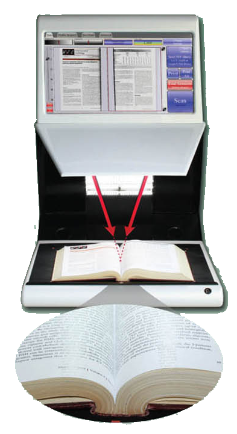
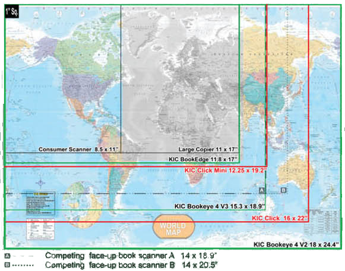
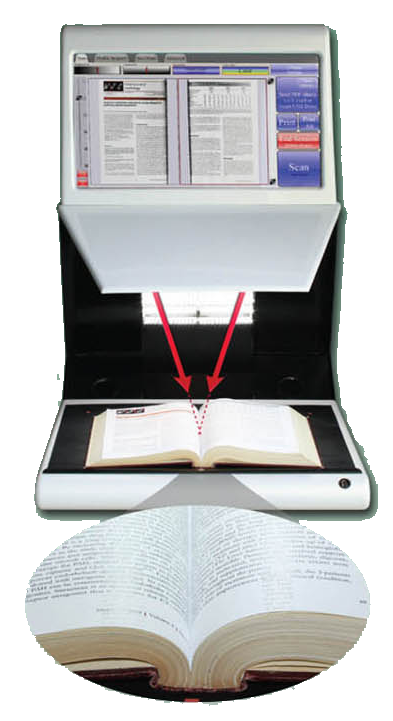
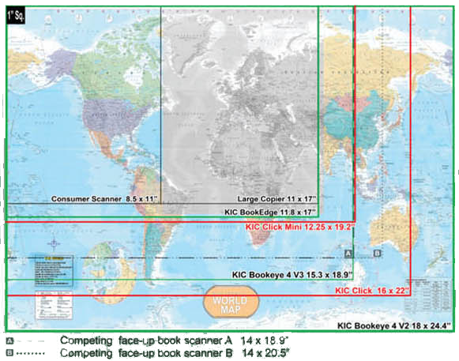

Study, Report, Research, Collaborate ... Digitally
The KIC Click is a high-speed, face-up book capture system at an affordable price. Its sleek and elegant look will complement any library floor. And with its True2TouchTM user interface, KIC Click is as easy to use as it is beautiful. Are there any compromises? You decide.
The KIC Click captures nearly 20 book pages per minute for instant access on tablets, notebooks, smart devices and easy transfer to desktop PCs and servers. With a bed size 30% larger than its nearest competitor, it captures up to 22 x16 inch books and materials at an uncompromising resolution of 300dpi.
Photocopiers, PCs, monitors and keyboards clutter up otherwise beautiful libraries across America. The smooth but rugged black or white KIC Clicks totally reverse that trend, adding beauty to even the most beautiful libraries.

KIC Serves Over Half of Students at Universities in America
In the U.S. alone, KIC serves over four million students at the top "brick and mortar" (non-online) colleges and universities. With the introduction of the KIC BookEdge, KIC Click, and KIC Click Mini, KIC is now affordable for virtually all institutions of higher learning and full-service public libraries. Last decade, libraries typically 'added' several KICs, but since 2010 libraries have begun to replace their entire patron-use copier fleets with self-serve book scanning systems.
A True Digital Age Multifunction System for Academic & Public Libraries
Book Scanning
Students at academic libraries want speed, and DLSG offers the fastest book scanners on the market. Patrons at public libraries need simplicity, and KIC provides three of the simplest possible user interfaces, one exclusively for scanning, one exclusively for copying and one exclusively for faxing. And KIC's best-of-breed power user interface is only a touch away.
Copier Replacement

While multifunction copiers are partly digital, they are big mechanical machines with big maintenance issues and tiny touch screens. As a copier replacement, KIC eliminates copier failure/service problems and provides very large touch screens and view screens that are larger still. Organizing (collating, clipping, rotating, etc.) pages on a huge touch screen is much easier than shuffling paper.
The digital age has steadily driven down the demand in libraries for paper copies to levels that make it increasingly difficult to justify copiers. KIC self-service scanning systems reduce copier use further - to the point that attaching a small laser or ink jet printer is sufficient. KIC systems also handle much larger materials than copiers, and they scan books without damaging them. However, the most compelling benefit of KIC over copiers is KIC's speed, due mainly to its face-up scanning design, which is not only significantly faster, but far easier to use.
Self-Serve Fax
KIC's huge touch screen and larger view screen make faxing extra easy. Users can compose, review, clip, crop and change brightness and contrast of the pages of a fax before sending. KIC's step-by-step process is designed for easy operation by even the most timid users. All you need is an internet connection, and DLSG will provide the rest at a cost so low that fax revenue can pay for the KIC system in a few years or less.
KIC Coins
Printing copies and faxing have per page costs that normally must be passed on to the user. KIC has a free, built-in method of charging users for copies and faxes. Simply print wallet-size "KIC Coins" on regular letter-sized paper in any denomination that you like, cut them out, and sell them to users at the circulation desk or wherever you collect fees for late book returns.
KIC Compatible with Copy Card & Cash Systems
All KIC systems are compatible with all standard copy card and coin-op devices. Since KIC transfers images to users' computers electronically, costly expendables are avoided, even for color! The library can opt to keep all revenue it collects.
KIC Makes Your Print Collections Searchable
Search hundreds of pages of PDF or text files created in just minutes using KIC Click Mini
Users need only locate the volume(s) that they expect to contain the information they are seeking, scan selected sections and output either a searchable PDF file or a text file. These files can easily be searched for various keywords.
Keyword searching is becoming an indispensable capability that significantly improves the quality and efficiency of researching print collections.
- Access more sources DIGITALLY
- Find information faster
- Deliver results in digital form
- Get your research in digital form
In case you didn't know ...
...what you can do with scanned images

Beautiful Images - Fast and Easy, and Nondestructive
Capture Deep into the Bookfold
KIC Click's Dual Cameras are Set at the Perfect Angles
Most books curve at the spine - some rather dramatically. KIC Click gets deep into the bookfold of tightly-bound volumes by capturing from two angles, and easily straightens out the worst curves, producing clear, professional quality images.

Fast, Face-Up Scanning that Captures Into the Book Fold Like No Other Machine

Thick Books...No Problem
KIC Click handles thick books beautifully. Text is clear and undistorted. KIC automatically adds margins for print-ready image quality.
Capture Area Comparison
KIC Click's ample 16 X 22 inch capture area is over 50% larger than that of 11x17 inch copiers and twice that of typical consumer scanners. It handles a large percentage of books that are too big for an 11x17 inch scan bed, scanning them two pages at a time without damage to their spines.

KIC Click's high speed is derived as much from its ultra-simple, true two-touch interface as from its face-up design that obviates the need to flip books over and over again during the capture process.
KIC Click's sleek look and elegant design put the full KIC self-serve digitization functionality into a mere 25 inch width. Its large, 22 inch touch screen and capture surface are at the perfect heights for quick, standing operation when placed on a typical table or its optional K-legs.
Capture Oversized Books
KIC Click Mini's generous 12.25 X 19.2 inch capture area is 27% larger than that of 11x17 inch copiers and about twice that of typical consumer scanners. It easily handles books that are too big for an 11x17 inch scan bed, scanning them two pages at a time without damage to their spines.

Very large volumes can be scanned side-ways, one page at a time and rotated.
True 2 Touch™ User Interface
Ease-of-use is a central feature of KIC. The KIC Click's large touch screen and its large "Scan" and "Save, Send or Print" buttons that occupy a very large portion of the touch screen clearly convey how easy KIC is to use. The Save button defaults to an output method and file format that is selectable by the institution. If a flash drive is inserted, KIC detects this and the output button changes to indicate that it will save to the flash drive. Users can override the default output method by manually selecting one or more alternative methods of output.

KIC's True2Touch™ User Interface, Especially Forgiving for Beginners
- KIC is very agile, and allows the user to jump from just about anywhere in the touch screen system to just about anywhere else, directly and usually with a single touch. This modern, 'modeless' design is easier to use, but difficult to create.
- KIC's large buttons and controls are easy to use, even for people with unsteady hands.
- KIC gradually expands and contracts controls such as brightness, con- trast and DPI so users can easliy follow their screen activity
- KIC doesn't delete original images when you clip a photo or excerpt of text unless you tell it to.
- KIC lets you output to many different destinations in a single session.
- Once you've scanned a document, you can change your mind as to where you would like it to output. For example, you may have wanted to save to USB, but learned your USB drive is full. Or you may scan so much that it exceeds your email limit. Or after scanning and collating a mass of research, you decide that you want to share the research with others.
Two Large Screens for Simplicity & Power
It's easy to undervalue screen size. For 20 years, all cell- phone makers relentlessly pursued smaller and smaller screens until very recently when one company reversed that trend. They realized that people want the largest screen that will fit in their pocket/purse and hand. This is because dis- play screens are our window to the digital world, and touch screens give us control over that world.
As big as self-serve scanning systems are, it makes sense to have a very large touch screen. And with the low prices for high quality displays, it is compelling to add a separate display screen. In 2002, DLSG realized this, when the first KIC system was designed. Today, with nearly 10 years more experience than any other vendor, DLSG has the most under- standable, easy to use and powerful user interface for self- serve book scanning, and it's based on dual screens.
The view screen shows very large, clear images of what you've scanned, allowing the touch screen to have big, easy to understand buttons and other controls.
Display screens are our portals into the digital world, and touch screens are the easiest way to control that world. That's why DLSG provides large, 24 inch, full HD displays and equally large touch screens with most of its KIC systems.

Dual Screen Touch & View
Users need only locate the volume(s) that they expect to contain the information they are seeking, scan selected sections and output either a searchable PDF file or a text file. These files can easily be searched for various keywords.
Keyword searching is becoming an indispensable capability that significantly improves the quality and efficiency of researching print collections.
- Access more sources DIGITALLY
- Find information faster
- Deliver results in digital form
- Get your research in digital form
In case you didn't know ...
...what you can do with scanned images
Beautiful Images - Fast and Easy, and Nondestructive
Capture Deep into the Bookfold
KIC Click's Dual Cameras are Set at the Perfect Angles
Most books curve at the spine - some rather dramatically. KIC Click gets deep into the bookfold of tightly-bound volumes by capturing from two angles, and easily straightens out the worst curves, producing clear, professional quality images.
Fast, Face-Up Scanning that Captures Into the Book Fold Like No Other Machine
Thick Books...No Problem
KIC Click handles thick books beautifully. Text is clear and undistorted. KIC automatically adds margins for print-ready image quality.
Capture Area Comparison
KIC Click's ample 16 X 22 inch capture area is over 50% larger than that of 11x17 inch copiers and twice that of typical consumer scanners. It handles a large percentage of books that are too big for an 11x17 inch scan bed, scanning them two pages at a time without damage to their spines.
KIC Click's high speed is derived as much from its ultra-simple, true two-touch interface as from its face-up design that obviates the need to flip books over and over again during the capture process.
KIC Click's sleek look and elegant design put the full KIC self-serve digitization functionality into a mere 25 inch width. Its large, 22 inch touch screen and capture surface are at the perfect heights for quick, standing operation when placed on a typical table or its optional K-legs.
Capture Oversized Books
KIC Click Mini's generous 12.25 X 19.2 inch capture area is 27% larger than that of 11x17 inch copiers and about twice that of typical consumer scanners. It easily handles books that are too big for an 11x17 inch scan bed, scanning them two pages at a time without damage to their spines.
Very large volumes can be scanned side-ways, one page at a time and rotated.
True 2 Touch™ User Interface
Ease-of-use is a central feature of KIC. The KIC Click's large touch screen and its large "Scan" and "Save, Send or Print" buttons that occupy a very large portion of the touch screen clearly convey how easy KIC is to use. The Save button defaults to an output method and file format that is selectable by the institution. If a flash drive is inserted, KIC detects this and the output button changes to indicate that it will save to the flash drive. Users can override the default output method by manually selecting one or more alternative methods of output.
KIC's True2Touch™ User Interface, Especially Forgiving for Beginners
- KIC is very agile, and allows the user to jump from just about anywhere in the touch screen system to just about anywhere else, directly and usually with a single touch. This modern, 'modeless' design is easier to use, but difficult to create.
- KIC's large buttons and controls are easy to use, even for people with unsteady hands.
- KIC gradually expands and contracts controls such as brightness, con- trast and DPI so users can easliy follow their screen activity
- KIC doesn't delete original images when you clip a photo or excerpt of text unless you tell it to.
- KIC lets you output to many different destinations in a single session.
- Once you've scanned a document, you can change your mind as to where you would like it to output. For example, you may have wanted to save to USB, but learned your USB drive is full. Or you may scan so much that it exceeds your email limit. Or after scanning and collating a mass of research, you decide that you want to share the research with others.
Two Large Screens for Simplicity & Power
It's easy to undervalue screen size. For 20 years, all cell- phone makers relentlessly pursued smaller and smaller screens until very recently when one company reversed that trend. They realized that people want the largest screen that will fit in their pocket/purse and hand. This is because dis- play screens are our window to the digital world, and touch screens give us control over that world.
As big as self-serve scanning systems are, it makes sense to have a very large touch screen. And with the low prices for high quality displays, it is compelling to add a separate display screen. In 2002, DLSG realized this, when the first KIC system was designed. Today, with nearly 10 years more experience than any other vendor, DLSG has the most under- standable, easy to use and powerful user interface for self- serve book scanning, and it's based on dual screens.
The view screen shows very large, clear images of what you've scanned, allowing the touch screen to have big, easy to understand buttons and other controls.
Display screens are our portals into the digital world, and touch screens are the easiest way to control that world. That's why DLSG provides large, 24 inch, full HD displays and equally large touch screens with most of its KIC systems.
Dual Screen Touch & View